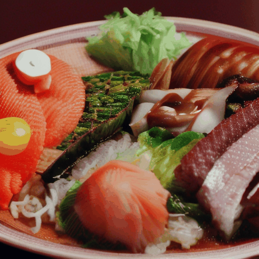
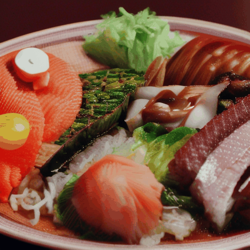

Abstract
While text-to-video diffusion models have made significant strides, many still face challenges in generating videos with temporal consistency. Within diffusion frameworks, guidance techniques have proven effective in enhancing output quality during inference; however, applying these methods to video diffusion models introduces additional complexity of handling computations across entire sequences. To address this, we propose a novel framework called \textbf{MotionPrompt} that guides the video generation process via optical flow. Specifically, we train a discriminator to distinguish optical flow between random pairs of frames from real videos and generated ones. Given that prompts can influence the entire video, we optimize learnable token embeddings during reverse sampling steps by using gradients from a trained discriminator applied to random frame pairs. This approach allows our method to generate visually coherent video sequences that closely reflect natural motion dynamics, without compromising the fidelity of the generated content. We demonstrate the effectiveness of our approach across various models.
Method
MotionPrompt enhances temporal consistency in text-to-video diffusion models by combining prompt optimization with an optical flow-based discriminator. Leveraging gradients from a subset of frames and aligning optical flow with real-world motion patterns, MotionPrompt efficiently generates videos with smooth, realistic motion and strong contextual coherence.
Experimental Results
1. Comparison with Previous work
We provide visual comparisons of our method against three baselines: LaVie, VideoCrafter2 and AndimateDiff. The baselines struggle with maintaining temporal consistency, often failing to preserve the appearance or quantity of objects, and sometimes resulting in objects that suddenly appear or disappear. In contrast, the proposed framework effectively suppresses appearance changes and sudden shifts in video generation. Additionally, our method maintains a consistent color tone across all frames and accurately captures the scene attributes and details intended by the original prompts.
LaVie + Ours
VideoCrafter2 + Ours

AnimateDiff + Ours


7. Prior Distillation

Degraded performance due to a substandard data prior is an issue only solvable through extra training. However VideoGuide provides a workaround to this matter by enabling the utilization of a superior data prior. Generated samples are guided towards a result of better text coherence while maintaining the style of the original data domain. For each prompt, the same random seed is shared for both methods.